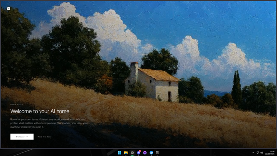
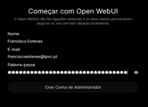
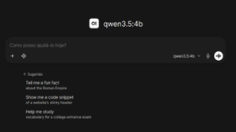
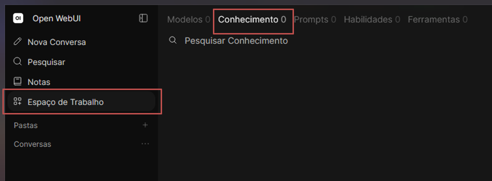
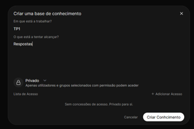
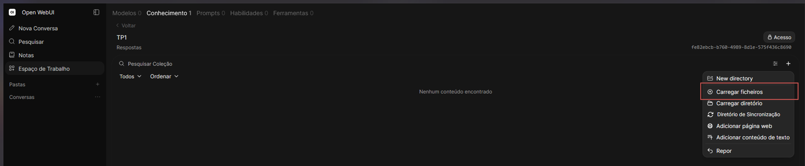
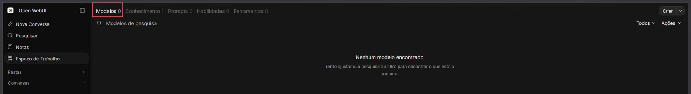
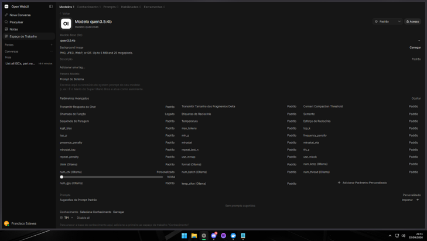
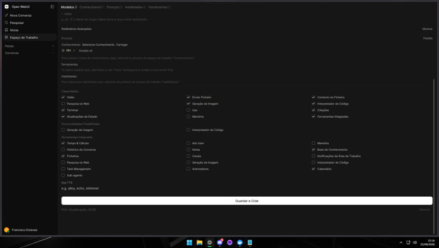
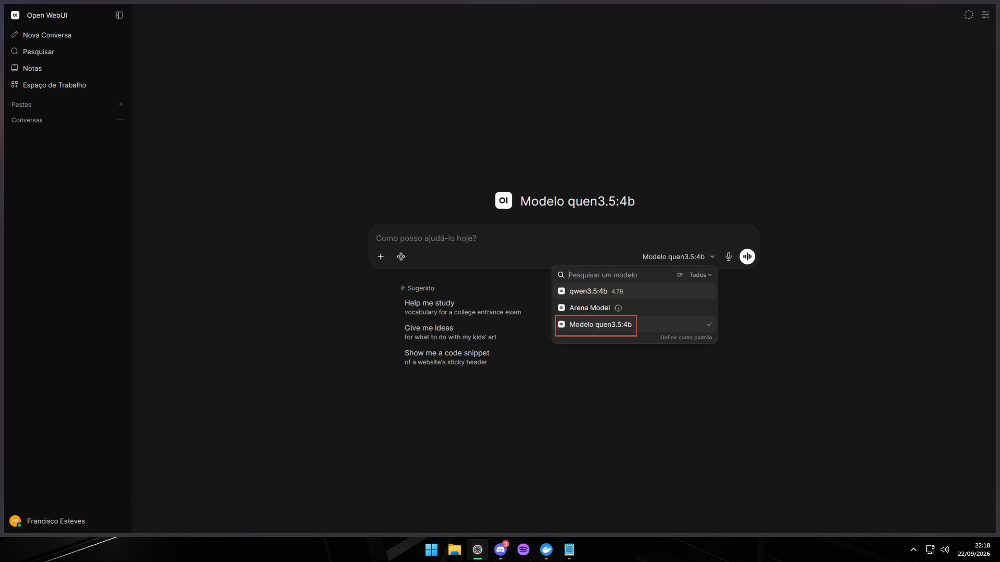

Guia de utilização · Windows 11 · LLM local
Open WebUI
Instale, crie uma base de conhecimento e converse com os seus documentos.
O que é
O Open WebUI permite conversar com modelos locais e consultar os seus ficheiros. Neste guia vai usar Ollama, criar uma base de conhecimento e associá-la a um modelo de conversa.
Preparar Ollama e o modelo
Precisa de Docker Desktop e Ollama abertos. Se ainda não preparou o Docker, siga o README do manual.
Já instalou Ollama e descarregou qwen3.5:4b no guia anterior? Passe diretamente à instalação do Open WebUI. Também pode usar outro modelo local que já tenha no Ollama.
Se ainda não tem Ollama
winget install --id Ollama.Ollama -e --source wingetResultado: Ollama instalado. Confirme os termos apresentados e aguarde que termine.
Feche e reabra o PowerShell. Abra Ollama pelo menu Iniciar.
Descarregar o Qwen 4b
ollama pull qwen3.5:4bResultado: modelo descarregado. Aguarde pela indicação de sucesso antes de continuar.
Instalar o Open WebUI
Se o LocalGPT estiver aberto, pare os seus serviços primeiro: também usa a porta 3000.
Com Docker Desktop e Ollama abertos, copie o comando completo:
docker run -d -p 3000:8080 --add-host=host.docker.internal:host-gateway -v open-webui:/app/backend/data --name open-webui --restart always ghcr.io/open-webui/open-webui:mainResultado: imagem descarregada e contentor open-webui criado. Os dados ficam guardados no volume open-webui.
Aguarde pelo arranque e tente abrir Abrir Open WebUI ↗
Se a página ainda não abrir, reinicie o contentor e aguarde novamente:
docker restart open-webuiResultado: contentor reiniciado. Espere pelo arranque e volte a abrir http://localhost:3000.
Abrir e criar a conta
Começar
Em http://localhost:3000, deverá aparecer o ecrã de boas-vindas. Clique em Começar.

Imagem 5 — Ecrã de boas-vindas do Open WebUI. Clique na imagem para ampliar. Criar a conta
Preencha o seu nome, e-mail e palavra-passe. Clique em Criar Conta de Administrador. Use os seus dados; a imagem é apenas um exemplo.

Imagem 6 — Formulário de criação da primeira conta local. Clique na imagem para ampliar. Confirmar o acesso
Depois de criar a conta, deverá ver a página inicial de conversa, como na imagem.

Imagem 7 — Página inicial com o modelo qwen3.5:4b. Clique na imagem para ampliar.
Criar a base de conhecimento
Abrir «Conhecimento»
Na barra lateral, clique em Espaço de Trabalho. Na barra superior, escolha Conhecimento.

Imagem 8A — Acesso a Espaço de Trabalho → Conhecimento. Clique na imagem para ampliar. Criar a base
Clique no botão + e preencha o nome e a descrição. No exemplo, o nome é TP1 e a descrição é Respostas. Termine em Criar Conhecimento.

Imagem 8B — Nome e descrição da base de conhecimento. Clique na imagem para ampliar. Carregar os ficheiros
Abra a base criada, clique no botão + e escolha Carregar ficheiros. Selecione os documentos que pretende consultar e aguarde que o carregamento e o processamento terminem.

Imagem 9 — Opção Carregar ficheiros dentro da base de conhecimento. Clique na imagem para ampliar.
Para pesquisa local, mantenha o motor de embeddings local predefinido. O primeiro processamento pode precisar de descarregar os respetivos ficheiros de modelo.
Criar o modelo com os documentos
Abrir «Modelos»
Em Espaço de Trabalho, escolha a aba Modelos e clique em Criar, no canto superior direito (ou no botão +, conforme a versão).

Imagem 10 — Aba Modelos e botão Criar. Clique na imagem para ampliar. Escolher o modelo e associar a base
Dê um nome à configuração, por exemplo Modelo qwen3.5:4b. Em Modelo Base, selecione
qwen3.5:4bou outro LLM local que tenha no Ollama.Na secção Conhecimento, clique em Selecione Conhecimento e associe a base criada no passo anterior, como TP1. Esta associação permite usar os seus ficheiros nas respostas.
Pode acrescentar ao Prompt do Sistema uma orientação como:
Responde com base nos documentos associados e indica as fontes. Se não encontrares a informação, diz que não está disponível nos documentos.

Imagem 11 — Exemplo de configuração do modelo base e associação do conhecimento. Clique na imagem para ampliar. Guardar a configuração
As imagens 11 e 12 mostram um exemplo para consulta de documentos (RAG). Para este uso, mantenha a pesquisa web desativada e confirme a base de conhecimento associada. Os restantes parâmetros podem ficar nos valores predefinidos.
No fim do formulário, clique em Guardar e Criar.

Imagem 12 — Opções do modelo e botão Guardar e Criar. Clique na imagem para ampliar.
Selecionar o modelo e conversar
Abra Nova Conversa. No seletor de modelos, escolha a configuração que acabou de criar — no exemplo, Modelo qwen3.5:4b. É essa configuração que tem a base de conhecimento associada.

Escreva a primeira pergunta:
Resume os pontos principais dos documentos e indica as fontes que usaste.
Aguarde a resposta e confira a informação nos ficheiros originais.
Parar e voltar a iniciar
docker stop open-webuiResultado: Open WebUI parado, mantendo a conta, as conversas e os documentos no volume.
Noutro dia, abra Docker Desktop e Ollama. Com a porta 3000 livre, execute:
docker start open-webuiResultado: contentor novamente em execução. Aguarde e abra http://localhost:3000.
Não repita a instalação para voltar a abrir: use o contentor já criado.
Problemas frequentes
A porta 3000 está ocupada
Pare o LocalGPT ou a aplicação que estiver a usar essa porta antes de iniciar o Open WebUI.
O nome «open-webui» já está em uso
O contentor já existe. Use o comando de arranque do passo anterior.
O modelo não aparece
Confirme que Ollama está aberto e que o download terminou. Nas ligações Ollama do painel de administração, confirme o endereço http://host.docker.internal:11434.
As respostas não usam os ficheiros
Confirme que o processamento terminou, que a base foi associada em Conhecimento e que selecionou a configuração criada no chat.
A página continua sem abrir depois de reiniciar
Confirme que Docker Desktop está em execução e consulte as mensagens:
docker logs --tail 50 open-webuiResultado: últimas mensagens do contentor para identificar o erro.
Percurso ilustrado com as imagens fornecidas para este projeto. Referências: instalação Open WebUI, bases de conhecimento, modelos e Ollama para Windows.
← Voltar aos guias